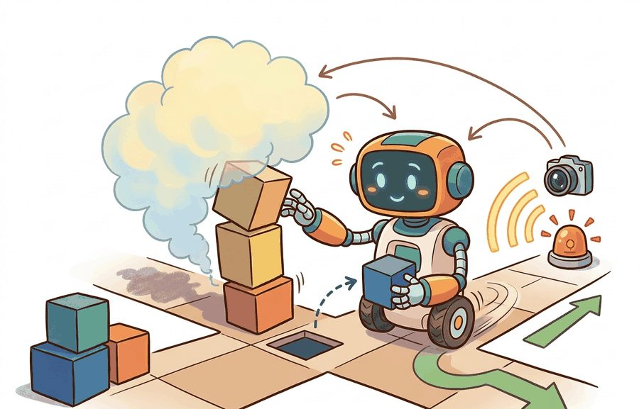
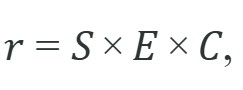
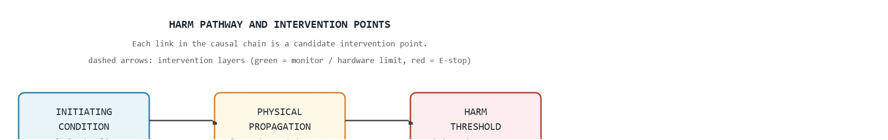

Safety begins by naming the physical harm path, not by lowering a benchmark score.
A Safety-Critical Controls Researcher
A hospital delivery robot misreads a doorway clearance by eight centimeters and pins a nurse against a wall. No software rollback undoes that. As robots move from controlled warehouses into hospitals, construction sites, and homes, the gap between "policy error" and "physical injury" is shrinking to milliseconds. This section shows why the standard ML toolkit of accuracy metrics and reward curves is insufficient for embodied systems, how engineers rank harm pathways before choosing mitigations, and what constraints must sit outside the learned policy entirely. The methods developed here support building and auditing a hazard table that a safety regulator can scrutinize.

This section assumes familiarity with reward design and constraint formulation from section 18.2, where task objectives are defined independently of safety margins. The hazard-ranking framework introduced here is extended in section 54.2 (constrained policy learning) and section 54.5 (override and E-stop testing), and the assurance case that ties hazard logs to release evidence is built out in section 54.7.
Why embodied safety is different (physical harm) sits at the boundary between learning and safety engineering. The question is not whether the policy usually behaves well, but whether dangerous states are detected, blocked, or exited fast enough to protect people, equipment, and mission goals. Figure 54.1.1 captures this framing: a single robot action maps to distinct consequence classes for people, equipment, and mission continuity, which is exactly why one accuracy number cannot summarize safety.
Standard ML safety practice (accuracy metrics, held-out validation, reward curves) treats every error as an interchangeable, recoverable data point: a misclassification is retried, a low-reward episode is discarded and retrained on. Embodied safety differs because a policy error becomes a physical event the moment it is executed on hardware, and physical events such as a crushed hand or a severed cable cannot be rolled back the way a bad gradient step can. The rest of this section builds the tools that follow from that difference: a hazard-ranking score in place of an accuracy number, a harm-pathway trace in place of a reward curve, and an intervention-authority stack that sits outside the learned policy so a single policy error cannot become the last line of defense.
Consider a specific case: the Boston Dynamics Spot robot deployed in oil-and-gas inspection sites operates under a mandatory 0.5 m/s speed cap near active personnel, a force cutoff at 80 N on any limb contact, and an E-stop (an emergency stop: a dedicated circuit that cuts actuator power independently of the control software) that must engage within 200 ms of a proximity-sensor trigger. These are not policy parameters; they are hardware and safety-controller constraints that override the navigation policy entirely. The point is that the safety argument is anchored to specific thresholds, sensor latency budgets, and audit logs, not to the headline accuracy of the perception stack.
A common hazard-ranking surrogate is

where $S$ is severity, $E$ is exposure, and $C$ is uncontrollability or low controllability. This does not replace deeper methods like Systems-Theoretic Process Analysis (STPA) or formal verification, but it disciplines the review.When populating the $S \times E \times C$ table, anchor each score to a loggable quantity rather than team intuition: severity to the maximum kinetic energy or force the actuator can deliver at that joint configuration, exposure to the fraction of mission time the robot spends within 1 m of a person (read directly from the rosbag (a recorded log of all ROS message traffic during a run) or the ROS 2 /tf topic, which broadcasts the coordinate transforms between robot links), and controllability to the measured worst-case latency from sensor trigger to actuator stop in milliseconds. Scores that are not tied to a measurable will silently drift across review cycles and will not survive an external safety audit. A quick sanity check: if you cannot point to a log file or a data sheet entry for each number, the cell is still an assumption, not evidence.
The same policy error can have trivial consequences in simulation and unacceptable consequences on hardware. Safety analysis therefore starts from harm pathways before model internals, not from accuracy curves or reward plots.
A policy that performs flawlessly in simulation but destroys a shoulder joint on first contact is not a safe policy: it is a very convincing rehearsal.
To replace that convincing rehearsal with a defensible safety argument, we need a precise unit of analysis, and that unit is the harm pathway. A harm pathway is a causal chain from a robot state or action to a specific physical outcome: for example, "arm velocity exceeds 1.2 m/s in a shared zone" leads to "contact force above 150 N" leads to "soft-tissue injury." Starting from harm pathways matters in embodied AI because physical consequences are irreversible. A misclassified image costs a retry; a misclassified clearance margin costs a broken bone. Accuracy metrics cannot surface this asymmetry because they aggregate over all errors equally. A 99% accurate policy commits the dangerous 1% of errors at random. In a 10,000-step deployment that is 100 unchecked violations. Yet a standard evaluation suite of 500 episodes may never trigger a single one, because the hazardous state is rare by design. The policy therefore looks perfect on every benchmark curve right up to the moment it is not.
To trace a harm pathway, link three elements. The initiating condition is a sensor fault, a policy output, or an environmental trigger. The physical propagation carries force, speed, or energy through the robot body and its surroundings. The harm threshold is the measurable value at which tissue damage, entrapment, or structural failure begins. Each link in the chain becomes a candidate intervention point: block the initiating condition, interrupt propagation, or keep the system below the threshold with a hardware limit. Figure 54.1.2 lays out this three-stage chain and maps one intervention layer onto each stage.
So far: a harm pathway is a three-link causal chain (initiating condition, physical propagation, harm threshold), it matters because physical harm is irreversible in a way accuracy metrics cannot represent, and each link is a candidate place to intervene before harm occurs.

A service robot instructed to hurry through a corridor can remain task-optimal while becoming unsafe because it now violates human-clearance and stop-distance assumptions.
hazards = [
{"name": "pinch", "severity": 5, "exposure": 2, "controllability": 2},
{"name": "blocked_exit", "severity": 4, "exposure": 3, "controllability": 3},
]
for h in hazards:
h["risk_score"] = h["severity"] * h["exposure"] * h["controllability"]
print(hazards)[{'name': 'pinch', 'severity': 5, 'exposure': 2, 'controllability': 2, 'risk_score': 20}, {'name': 'blocked_exit', 'severity': 4, 'exposure': 3, 'controllability': 3, 'risk_score': 36}]risk_score = severity * exposure * controllability loop that ranks the pinch and blocked-exit hazards, so safety work begins with an explicit, auditable ordering rather than vague concern.Expected output: The blocked-exit hazard outranks the pinch hazard under this crude scheme because exposure and controllability are worse. The exact numbers are less important than making the ranking auditable and discussable.
Trace the surrogate score $r = S \times E \times C$ for the two hazards above, one cell at a time. Pinch hazard: severity $S = 5$ (worst case is a crushed finger, near the top of the 1 to 5 scale), exposure $E = 2$ (the gripper is near a hand only during the grasp phase, roughly 20 percent of mission time), controllability $C = 2$ (a torque cutoff usually interrupts the motion in time). Multiply: $5 \times 2 \times 2 = 20$. Blocked-exit hazard: severity $S = 4$ (people are trapped but not directly struck), exposure $E = 3$ (the robot crosses doorways throughout the mission), controllability $C = 3$ (once the robot wedges itself there is no clean recovery without a manual move). Multiply: $4 \times 3 \times 3 = 36$. Compare: $36 > 20$, so blocked-exit ranks first even though its single-event severity (4) is lower than the pinch severity (5). The lesson the numbers make concrete: a moderate-severity hazard that the robot meets often and cannot undo can outrank a high-severity hazard that is rare and interruptible.
Computing a ranking by hand makes the logic clear, but a real program tracks dozens of hazards across many review cycles, which is where maintained tooling for hazard logs and analysis tables earns its place.
Hazard logs, Failure Mode and Effects Analysis (FMEA) tables, and structured Operational Design Domain (ODD) cards, which record the conditions a robot is certified to operate within, reduce the temptation to hold safety assumptions only in people’s heads. The maintained tools help because safety work is documentation and coordination as much as computation.
Physical-harm safety starts with a hazard log tied to robot energy, contact geometry, speed, payload, and human proximity. FMEA tables rank severity and detectability, ROS 2 lifecycle nodes (software components with an explicit state machine, such as "unconfigured," "active," and "inactive," so a supervisor can force a node into a safe state on demand) enforce intervention authority, and the assurance case links each hazard to a concrete log or replay artifact.
Think of the intervention authority stack like the layers of protection a cook uses around a hot stove: the recipe tells you what to do (the learned policy), a timer warns you before things burn (the runtime monitor), and the circuit breaker cuts power the moment there is smoke regardless of what the recipe says (the hardware E-stop). Each layer acts faster and more bluntly than the one below it, and the circuit breaker does not wait for the timer's opinion. If the recipe is the only safeguard, one distracted moment can cause irreversible harm.
Intervention authority answers: who or what can stop the robot, how fast, and under which conditions? Engineers structure it as a priority stack. At the lowest level, the learned policy sends velocity or torque commands. A runtime safety monitor sits above it and vetoes or clips those commands when a constraint is violated, for example when joint torque exceeds a limit or a person enters a clearance zone. Above that, a hardware E-stop layer ignores software entirely. It cuts actuator power within a fixed latency budget, typically under 100 ms for industrial arms compliant with ISO 10218-1 (the ISO standard governing safety requirements for industrial robot arms), though the exact figure depends on the certified configuration. Define this stack before integration. Otherwise, the learned policy becomes the only barrier between a fault and physical harm.
Safety reviews should ask what the robot can do physically, how quickly, around whom, and with which fallback. Those questions often reveal risks long before one reaches policy architecture details.
The stack is deliberately mixed: structured hazard review names what can go wrong, runtime monitors catch it while it is going wrong, and release evidence points to the exact experiment proving each mitigation works on the target hardware.
A common failure is to treat safety as a final acceptance test. By then the interfaces, latency budgets, and intervention authority may already be too rigid to fix cheaply. In one industrial-arm integration the team reported to us, catching a missing torque-limit enforcement at the hazard-analysis stage took on the order of a couple of engineer-hours to add; catching the same gap during hardware acceptance testing instead cost several weeks of redesign and re-certification. The exact numbers are anecdotal and will vary by program, but the direction, that late-stage safety gaps are typically far more expensive to fix, is consistent with standard systems-safety experience.
Beginner (weekend): Build a hazard-ranking dashboard for a simulated mobile robot in PyBullet: load a Gymnasium navigation environment, instrument it to log contact forces and proximity events, compute the S x E x C score for three predefined hazards, and display a live table in a Tkinter or Streamlit window. The key challenge is mapping raw physics contact data onto auditable severity scores without requiring manual annotation per step.
Intermediate (1-2 weeks): Implement a runtime safety monitor as a ROS2 node that sits between a MuJoCo-based arm policy (trained with LeRobot) and the robot's joint-velocity commands: the node subscribes to the policy output topic, clips any command that would bring the end-effector within a configurable exclusion sphere around a tracked human wrist pose, and publishes a veto log so every intervention is auditable. The key challenge is keeping the veto latency below 10 ms on the ROS2 callback thread while running the geometry check against a live TF tree that updates at 100 Hz.
This section motivates Section 54.2 on constrained learning, Section 54.5 on override testing, and Section 54.7 on assurance arguments.
Write a small hazard log for one embodied task with five hazards, their rankings, detection paths, and residual-risk notes. Then identify which hazards the nominal policy cannot mitigate by itself.
A common assumption is that a sufficiently accurate perception and control model is all that is needed to make an embodied robot safe. This is wrong in the embodied AI context because physical consequences are irreversible: a high-accuracy arm that lacks a hardware torque cutoff can still break a wrist on the one occasion the policy is wrong. Accuracy metrics aggregate errors uniformly, so they cannot capture the asymmetry between a recoverable software mistake and an unrecoverable injury. The correct mental model is that safety is enforced by hardware limits, runtime monitors, and intervention authority stacks that sit outside the learned policy and override it when thresholds are violated, regardless of the model's average performance.
Do not confuse low probability with low consequence. Rare harms can still dominate the release decision when severity and uncontrollability are high.
For a warehouse robot, blocked aisles and blind-corner collisions may outrank many manipulation mistakes because they couple to human traffic and emergency movement.
The KUKA LBR iiwa collaborative arm enforces exactly the intervention-authority stack this section describes: joint torque sensors run a hardware-level force monitor that halts motion the instant contact force exceeds the configured limit, independent of whatever the motion-planning software intended. This is why the iiwa can share a workspace with a human assembler without a safety fence, where the harm pathway from "arm velocity in shared zone" to "contact force above threshold" is cut at the propagation stage by the torque cutoff rather than relying on the planner being correct.
Direction 1: Diffusion-policy safety filtering at inference time. Rather than retraining a policy to avoid harm, recent work wraps a pretrained diffusion policy inside a lightweight safety layer that rejects or clips sampled trajectories before they reach the actuator. The Pi0 model from Physical Intelligence (Black et al., 2024) demonstrated large-scale visuomotor diffusion policies on dexterous manipulation, and follow-on safety work from CMU and ETH Zurich (2024-2025) showed that a CBF-QP filter inserted between the denoising output and the joint command can maintain end-effector clearance around a tracked human wrist at 1 kHz with under 1 ms added latency in reported benchmarks, without any policy fine-tuning.
Direction 2: Foundation-model-based hazard anticipation. VLM-integrated monitors now sit upstream of the control loop and flag semantic risk before an action is dispatched. Google DeepMind's RT-2 line (Zitkovich et al., 2023, with safety extensions published 2024) uses the same vision-language backbone both to command the robot and to score the situational danger of the planned action against a hazard vocabulary, allowing the system to refuse or soften commands before execution rather than relying solely on post-hoc E-stops.
Direction 3: Certified safe reinforcement learning for contact-rich tasks. Constrained-policy-optimization methods such as WCSAC (Worst-Case Soft Actor-Critic, Sootla et al.) and their 2024 descendants from Oxford and Stanford aim to provide high-probability constraint satisfaction guarantees even under distributional shift, using CVaR-based Lagrangian penalties (CVaR is the conditional value at risk: the expected loss in the worst-case tail of a distribution, here the worst-case contact forces) that penalize the tail of the contact-force distribution rather than its mean. These replace the informal S x E x C score with a bound auditors can cite in a safety case.
Open problem for a PhD student: All three directions above assume that the human or obstacle geometry is observable with low latency. A tractable open problem is deriving a minimal sensor specification (which combination of depth, force-torque, and proximity sensors, at what refresh rate) such that a given CBF or constraint-optimizer retains its safety guarantee under realistic sensor dropout and latency jitter. Current proofs treat sensing as instantaneous; closing this gap would directly enable certification of low-cost household robots where premium sensor suites are not available.
Can you name one hazard that comes from the environment and one that comes from the robot’s own action authority? If not, the safety analysis is still too generic.
Embodied safety starts with harm pathways and intervention authority. Model quality matters, but hazards and mitigations define the release gate.
Take one embodied application and write three hazards that would remain even if the policy were more accurate. Then propose the mitigation layer for each.
A robot that scores 99 percent accuracy but has no collision stop, no force limit, and no human override is not a safe robot. It is a very confident one, which is arguably more concerning.
Koopman, P., and Wagner, M. "Challenges in Autonomous Vehicle Safety." (2017). https://arxiv.org/abs/1705.01284
A useful systems view of safety as more than model accuracy.
UL 4600 overview. https://users.ece.cmu.edu/~koopman/ul4600/index.html
A practical assurance anchor for autonomous-system release arguments.
Section 54.2 now asks how to learn or explore while respecting hard limits instead of treating violations as ordinary data collection.